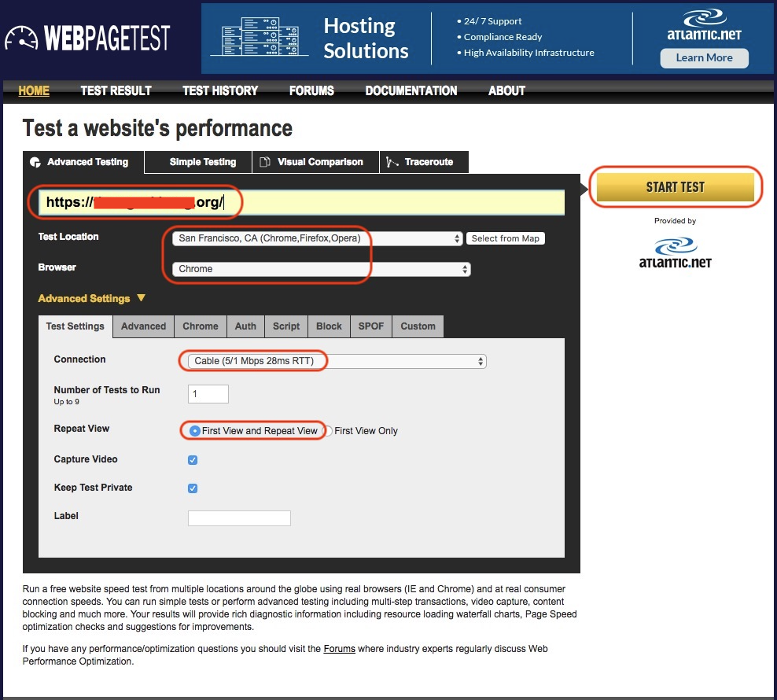
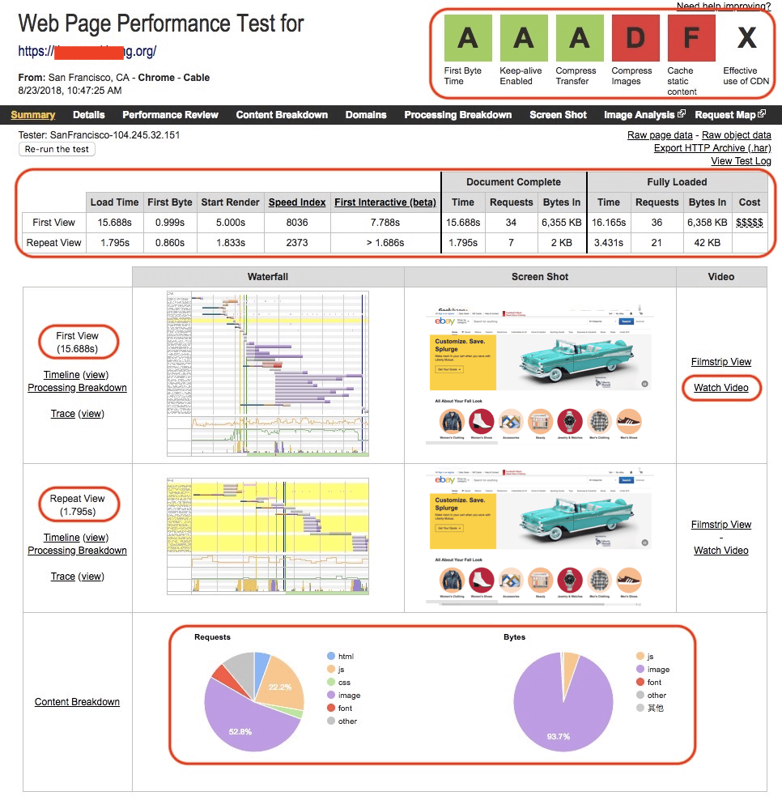
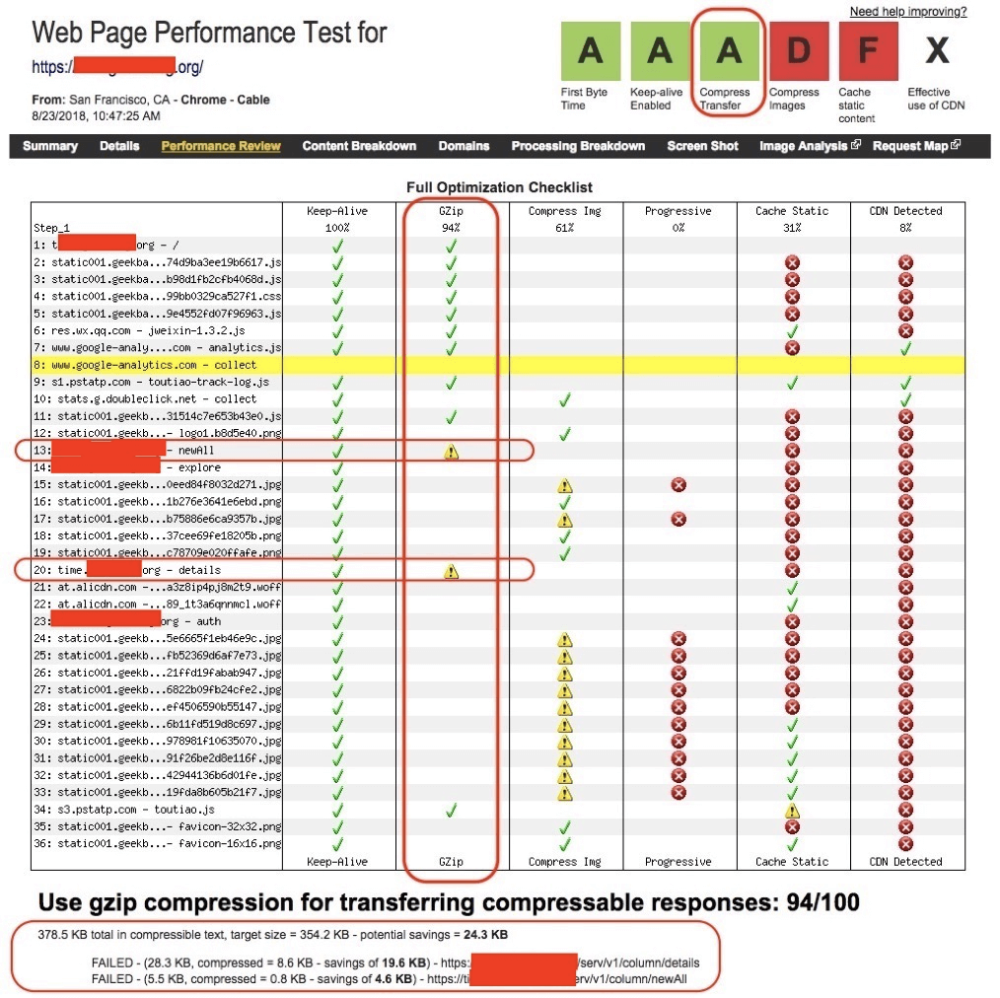
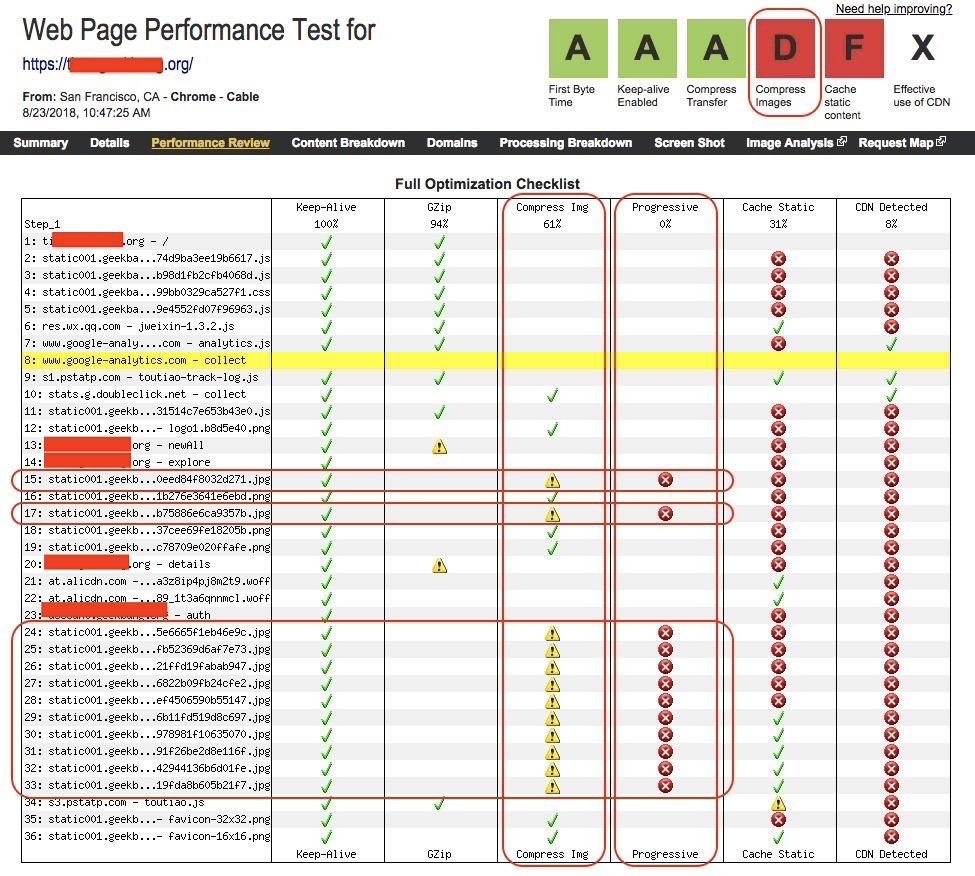
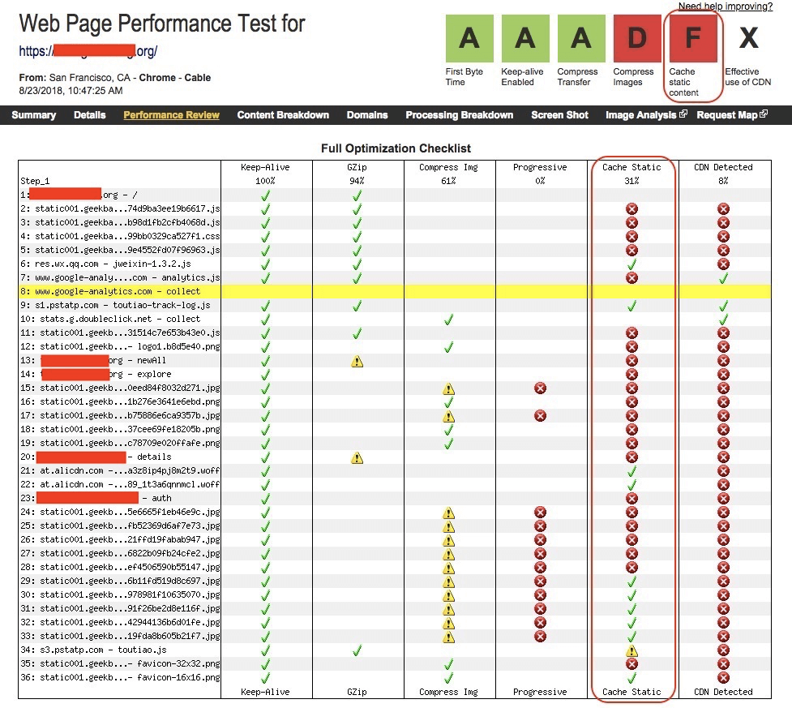
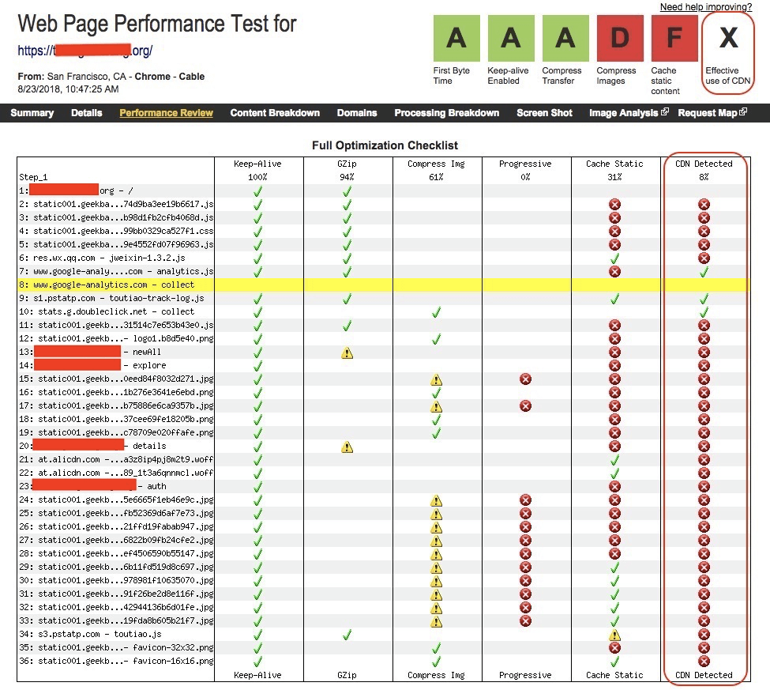
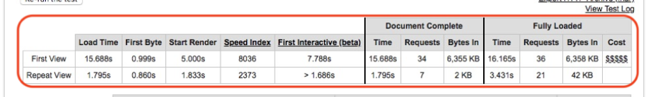

- 00 开篇词 从“小工”到“专家”，我的软件测试修炼之道.md
- 01 你真的懂测试吗？从“用户登录”测试谈起.md
- 02 如何设计一个“好的”测试用例？.md
- 03 什么是单元测试？如何做好单元测试？.md
- 04 为什么要做自动化测试？什么样的项目适合做自动化测试？.md
- 05 你知道软件开发各阶段都有哪些自动化测试技术吗？.md
- 06 你真的懂测试覆盖率吗？.md
- 07 如何高效填写软件缺陷报告？.md
- 08 以终为始，如何才能做好测试计划？.md
- 09 软件测试工程师的核心竞争力是什么？.md
- 10 软件测试工程师需要掌握的非测试知识有哪些？.md
- 11 互联网产品的测试策略应该如何设计？.md
- 12 从0到1：你的第一个GUI自动化测试.md
- 13 效率为王：脚本与数据的解耦 + Page Object模型.md
- 14 更接近业务的抽象：让自动化测试脚本更好地描述业务.md
- 15 过不了的坎：聊聊GUI自动化过程中的测试数据.md
- 16 脑洞大开：GUI测试还能这么玩（Page Code Gen + Data Gen + Headless）？.md
- 17 精益求精：聊聊提高GUI测试稳定性的关键技术.md
- 18 眼前一亮：带你玩转GUI自动化的测试报告.md
- 19 真实的战场：如何在大型项目中设计GUI自动化测试策略.md
- 20 与时俱进：浅谈移动应用测试方法与思路.md
- 21 移动测试神器：带你玩转Appium.md
- 22 从0到1：API测试怎么做？常用API测试工具简介.md
- 23 知其然知其所以然：聊聊API自动化测试框架的前世今生.md
- 24 紧跟时代步伐：微服务模式下API测试要怎么做？.md
- 25 不破不立：掌握代码级测试的基本理念与方法.md
- 26 深入浅出之静态测试方法.md
- 27 深入浅出之动态测试方法.md
- 28 带你一起解读不同视角的软件性能与性能指标.md
- 29 聊聊性能测试的基本方法与应用领域.md
- 30 工欲善其事必先利其器：后端性能测试工具原理与行业常用工具简介.md
- 31 工欲善其事必先利其器：前端性能测试工具原理与行业常用工具简介.md
- 32 无实例无真相：基于LoadRunner实现企业级服务器端性能测试的实践（上）.md
- 33 无实例无真相：基于LoadRunner实现企业级服务器端性能测试的实践（下）.md
- 34 站在巨人的肩膀：企业级实际性能测试案例与经验分享.md
- 35 如何准备测试数据？.md
- 36 浅谈测试数据的痛点.md
- 37 测试数据的“银弹”- 统一测试数据平台（上）.md
- 38 测试数据的“银弹”- 统一测试数据平台（下）.md
- 39 从小作坊到工厂：什么是Selenium Grid？如何搭建Selenium Grid？.md
- 40 从小工到专家：聊聊测试执行环境的架构设计（上）.md
- 41 从小工到专家：聊聊测试执行环境的架构设计（下）.md
- 42 实战：大型全球化电商的测试基础架构设计.md
- 43 发挥人的潜能：探索式测试.md
- 44 测试先行：测试驱动开发(TDD).md
- 45 打蛇打七寸：精准测试.md
- 46 安全第一：渗透测试.md
- 47 用机器设计测试用例：基于模型的测试.md
- 48 优秀的测试工程师为什么要懂大型网站的架构设计？.md
- 49 深入浅出网站高性能架构设计.md
- 50 深入浅出网站高可用架构设计.md
- 51 深入浅出网站伸缩性架构设计.md
- 52 深入浅出网站可扩展性架构设计.md
- 测试专栏特别放送 浅谈全链路压测.md
- 测试专栏特别放送 答疑解惑第一期.md
- 测试专栏特别放送 答疑解惑第七期.md
- 测试专栏特别放送 答疑解惑第三期.md
- 测试专栏特别放送 答疑解惑第二期.md
- 测试专栏特别放送 答疑解惑第五期.md
- 测试专栏特别放送 答疑解惑第六期.md
- 测试专栏特别放送 答疑解惑第四期.md
- 结束语 不是结束，而是开始.md
31 工欲善其事必先利其器：前端性能测试工具原理与行业常用工具简介
你好，我是茹炳晟。今天我和你分享的主题是：工欲善其事必先利其器之前端性能测试工具原理与行业常用工具简介”。
不同于后端性能测试知识的琐碎、独立，今天我将从问答形式回到正常的分享思路上，为你介绍前端性能测试工具为。我会以一个具体网站为例，和你分析WebPagetest的用法，以及前端性能相关的主要概念与指标。
WebPagetest功能简介
WebPagetest，是前端性能测试的利器：
- 可以为我们提供全方位的量化指标，包括页面的加载时间、首字节时间、渲染开始时间、最早页面可交互时间、页面中各种资源的字节数、后端请求数量等一系列数据；
- 还可以自动给出被测页面性能优化水平的评价指标，告诉我们哪些部分的性能已经做过优化处理了，哪些部分还需要改进；
- 同时，还能提供Filmstrip视图、Waterfall视图、Connection视图、Request详情视图和页面加载视频慢动作。
可以说，WebPagetest为我们提供了前端页面性能测试所需要的一切，而且还是免费的。接下来，我们就通过测试一个具体的网站，实践一下它的强大功能，以及具体使用方法吧。
使用WebPagetest测试某网站的首页
那么，接下来我就以某网站首页的前端性能测试和评估为例，和你一起看看如何使用这个强大的前端性能工具。
首先，访问WebPagetest的主页“http://www.webpagetest.org/” ，也就是工具的使用界面。
将被测页面的地址填写到被测Website URL栏中；
选择测试发起的地域（Test Location）以及你希望使用的浏览器，这里我选择了美国旧金山、Chrome浏览器。
WebPagetest在全球各大洲的很多国家和地区都有自己的测试代理机，这些测试代理机可能是虚拟机，也可能是真机，还有很多是建立在Amazon EC2上的云端机器。另外，WebPagetest除了支持各种浏览器以外，还支持主流的Android设备和Apple设备。
然后，选择需要模拟的网络情况。这里我选择了有线网络Cable，当然你也可以根据你的测试要求选择各种3G或者4G移动网络。
接着，在Repeat View中选择“First View and Repeat View”。这是一个很关键的选项。我们知道当使用浏览器访问网站时，第一次打开一个新的网页往往会很慢，而第二次打开通常就会快很多，这是因为浏览器端会缓存很多资源。这个选项的意思就是既要测试第一次打开页面的前端性能（First View），也要测试在有缓存情况下重复打开的前端性能（Repeat View）。
最后，点击“Start Test”发起测试。最终的测试设置界面，如图1所示。由于全球所有的用户会共享这些散布在各地的测试代理机，所以发起测试后，一般情况下我们的测试并不会被立即执行，而是会进入排队系统。当然，WebPagetest界面会清楚地告诉你排在第几位。

图1 WebPagetest的测试执行界面
测试执行完成后，我们会看到如图2所示的测试结果页面。这个页面包含非常多的信息，接下来我会一一解读这些信息，同时跟你分享前端性能指标相关的概念。

图2 WebPagetest的测试结果页面
前端性能评估结果评分
图2右上角的性能评估结果栏，列出了主要性能评估项目的评分。可以看到“First Byte Time”“Keep-alive Enabled”和“Compress Transfer”三项的评分都是A级，说明这三项做得比较好。但是，“Compress Images”“Cache static content”和“Effective use of CDN”的评分比较差，是需要优化的部分。
那么，接下来我们就看看这六项前端性能指标分别代表什么涵义。
第一，First Byte Time
First Byte Time，指的是用户发起页面请求到接收到服务器返回的第一个字节所花费的时间。这个指标反映了后端服务器处理请求、构建页面，并且通过网络返回所花费的时间。
本次测试的结果，首次打开页面（First View）花费的时间是999 ms，重复打开页面（Repeat View）花费的时间是860 ms。这两个指标都在1 s以下，所以WebPagetest给出了A级的评分。
第二，Keep-alive Enabled
页面上的各种资源（比如，图片、JavaScript、CSS等）都需要通过链接Web服务器来一一获取，与服务器建立新链接的过程往往比较耗费时间，所以理想的做法是尽可能重用已经建立好的链接，而避免每次使用都去创建新的链接。
Keep-alive Enabled就是，要求每次请求使用已经建立好的链接。它属于服务器上的配置，不需要对页面本身进行任何更改，启用了Keep-alive通常可以将加载页面的时间减少40%~50％，页面的请求数越多，能够节省的时间就越多。
如图3所示，本次测试的结果显示，所有的请求都复用了同一个链接，所以WebPagetest也给出了A级的评分。
图3 Keep-alive Enabled的统计结果
第三，Compress Transfer
如果将页面上的各种文本类的资源，比如Html、JavaScript、CSS等，进行压缩传输，将会减少网络传输的数据量，同时由于JavaScript和CSS都是页面上最先被加载的部分，所以减小这部分的数据量会加快页面的加载速度，同时也能缩短First Byte Time。
为文本资源启用压缩通常也是服务器配置更改，无需对页面本身进行任何更改。
如图4所示，本次测试结果显示，这个网站绝大多数的文本类资源都通过GZip进行了压缩，所以WebPagetest也给出了A级的评分。但是第13和第20项的两个资源并没有被压缩，报告中显示如果这两个资源也经过压缩，将可以减少额外的24.3KB的数据传输量。

图4 Compress Transfer的统计结果
第四，Compress Images
为了减少需要网络传输的数据量，图像文件也需要进行压缩处理。显然本次测试结果显示（图5），所有的JPEG格式图片都没有经过必要的压缩处理，并且所有的JPEG格式图片都没有使用渐进式JPEG（Progressive JPEG）技术，所以WebPagetest给出了D级的评分。
如果你不是专门做前端的工程师，可能并不知道什么是渐进式JPEG，没关系，我来简单解释一下吧。
普通JPEG文件存储方式是按从上到下的扫描方式，把每一行顺序地保存在JPEG文件中。打开这个文件显示它的内容时，数据将按照存储时的顺序从上到下一行一行地被显示，直到所有的数据都被读完，就完成了整张图片的显示。
如果文件较大或者网络下载速度较慢，就会看到图片是被一行一行加载的。为了更好的用户体验，渐进式JPEG技术就出现了。
渐进式JPEG包含多次扫描，然后将扫描顺序存储在JPEG文件中。打开文件的过程，会先显示整个图片的模糊轮廓，随着扫描次数的增加，图片会变得越来越清晰。这种格式的主要优点是在网络较慢时，通过图片轮廓就可以知道正在加载的图片大概是什么。
所以，这种技术往往被一些网站用于打开较大图片。

-
图5 Compress Images的统计结果
第五，Cache Static Content
一般情况下，页面上的静态资源不会经常变化，所以如果你的浏览器可以缓存这些资源，那么当重复访问这些页面时，就可以从缓存中直接使用已有的副本，而不需要每次向Web服务器请求资源。这种做法，可以显著提高重复访问页面的性能，并减少Web服务器的负载。
如图6所示，本次测试结果显示，被测网站有超过一半的静态资源没有被浏览器缓存，每次都需要从Web服务器端获取，所以WebPagetest给出了F级的评分。

-
图6 Cache Static Content的统计结果
第六，Effective use of CDN
首先，我来解释一下什么是CDN。
CDN是内容分发网络的缩写，其基本原理是采用各种缓存服务器，将这些缓存服务器分布到用户访问相对集中的地区的网络供应商机房内，当用户访问网站时，利用全局负载技术将用户的访问指向距离最近的、工作正常的缓存服务器上，由缓存服务器直接响应用户请求。
理解了什么是CDN后，我们再一起来看一下本次测试中CDN的使用情况。如图7所示，显然本次被测网站绝大多数的资源并没使用CDN。也许是由于本次发起测试的机器是在美国旧金山，而旧金山可能并不是该网站的目标市场，所以它并没有在这里的CDN上部署资源。

图7 CDN使用的统计结果
其他前端性能指标解读

图8 WebPagetest测试显示的前端性能指标
现在，我们再回过头来看看如图8所示的表格，这个表格包含了很多的前端性能指标，大多数指标，我们可以从字面上很容易理解其含义，比如Load Time、First Byte、Requests等，我就不再赘述了。
但是，Start Render、First Interactive和Speed Index这三个指标，相对较难理解，所以我会简单为你解释一下。
第一，Start Render
Start Render，指的是浏览器开始渲染的时间，从用户角度看就是在页面上看到第一个内容的时间。该时间决定了用户对页面加载快慢的的第一直观印象，这个时间越短用户会感觉页面速度越快，这样用户也会有耐心去等待其他内容的展现。如果这个时间过长，则用户会在长时间内面对一个空白页面后，失去耐心。
理论上讲，Start Render时间主要由三部分组成，分别是“发起请求到服务器返回第一个字节的时间（也就是First Byte时间）”“从服务器加载HTML文档的时间”，以及“HTML文档头部解析完成所需要的时间”，因此影响Start Render时间的因素就包括服务器响应时间、网络传输时间、HTML文档的大小以及HTML头中的资源使用情况。
本次测试中，第一次打开网页的Start Render时间是5 s，而第二次打开网页的Start Render时间是1.83 s。理想的Start Render时间并没有严格的标准，一般来情况下，这个值最好不要大于3 s，所以这个网站还可以再优化一下这个指标。
优化的基本思路是先找出时间到底花在了哪里，由于第二次的结果还是比较理想，所以可以从首次资源加载的角度找出突破口。
第二，First Interactive
First Interactive，可以简单地理解为最早的页面可交互时间。页面中可交互的内容，包括很多种类，比如点击一个链接、点击一个按钮都属于页面可交互的范畴。First Interactive时间的长短对用户体验的影响十分重要，决定着用户对页面功能的使用，这个值越短越好。
为了使这个值尽可能得小，我们通常会采取以下措施：
- 只有页面控件内容渲染出来了，才有可能进行交互，所以First Interactive依赖于Start Render时间。
- 尽量将交互控件的代码放置在HTML BODY的前部，让其尽早加载。
- 尽早做JavaScript的初始化和绑定，目前大多数做法有两种，一是在DOM Ready中做所有JavaScript的初始化和功能绑定，二是在页面底部做JavaScript的初始化和功能绑定。
这两种方式的优点在于简单，不需要关注具体DOM结点的位置；缺点则在于初始化的时间太晚。因此，应该将JavaScript的初始化提前到相关DOM元素建立起来后进行，例如将初始化的操作直接放在元素之后进行，这样就可以使控件尽可能早地变成可交互状态。
本次测试中，第一次打开网页的First Interactive时间是7.788 s，而第二次打开网页的First Interactive时间是略大于1.686 s的某个值。理想的First Interactive时间也没有严格的标准，一般情况下，这个值最好不要大于5 s，所以这个网站还可以根据上面的三条措施再优化一下这个指标。
第三，Speed Index
严格来说，Speed Index是通过微积分定义的。我们理解起来会比较困难，所以在这里我们和你只做定性的讨论。
通常，影响网页性能体验的一个重要指标是页面打开时间。打开时间越短，其体验越好。但是，当存在两个打开时间完全相同的网站A和B时，其中网站A的打开过程是逐渐渲染页面完成的，而网站B的打开过程则是空白了一段时间后在短时间内完成页面渲染完成的。
毫无疑问，网站A的用户体验一定好于B。Speed Index就是用来衡量这种体验的，通常来讲，它的值越小越好。
本次测试中，第一次打开网页的Speed Index是8036，而第二次打开网页的Speed Index是2373。
WebPagetest实际使用中需要解决的问题
讨论到这里，你是不是觉得WebPagetest是一个很强大的免费工具，但是如果想要在实际工程项目中全面推行该工具的话，还需要解决两个问题。
第一个问题是，如果被测网站部署在公司内部的网络中，那么处于外网的WebPagetest就无法访问这个网站，也就无法完成测试。要解决这个问题，你需要在公司内网中搭建自己的私有WebPagetest以及相关的测试发起机。具体如何搭建，你可以参考WebPagetest官网的建议，这里我就不再继续展开了。
第二个问题是，用WebPagetest执行前端测试时，所有的操作都是基于界面操作的，不利于与CI/CD的流水线集成。要解决这个问题，就必须引入WebPagetest API Wrapper。
WebPagetest API Wrapper是一款基于Node.js，调用了WebPagetest提供的API的命令行工具。也就是说，你可以利用这个命令行工具发起基于WebPagetest的前端性能测试，这样就可以很方便地与CI/CD流水线集成了。具体的使用步骤如下：
通过“npm install webpagetest -g”安装该命令行工具；
访问https://www.webpagetest.org/getkey.php获取你的WebPagetest API Key；
使用“webpagetest test -k API-KEY 被测页面URL”发起测试，该调用是异步操作，会立即返回，并为你提供一个testId；
使用“webpagetest status testId”查询测试是否完成；
测试完成后，就可以通过“webpagetest results testId”查看测试报告，但是你会发现测试报告是个很大的JSON文件，可读性较差；
通过“npm install webpagetest-mapper -g”安装webpagetest-mapper工具，这是为了解决测试报告可读性差的问题，将WebPagetest生成的JSON文件格式的测试报告转换成为HTML文件格式；
使用“Wptmap -key API-KEY –resultIds testId –output ./test.html”将JSON文件格式的测试结果转换成HTML格式。
总结
今天，我使用WebPagetest测试了一个具体网站的前端性能。在解读这个测试报告的同时，我和你分享了几个重要的前端性能指标，以及如何提升这些指标，最终达到优化网站用户体验的目的。
虽然，WebPagetest是一款免费的、功能强大的前端性能测试工具，但是用于实际测试项目时，往往还存在两个方面的问题，我给你分析了这两个问题出现的原因，以及如何解决这两个问题，以达到更高效地完成前端性能测试的目的。
思考题
除了我今天介绍的WebPagetest外，前端测试工具还有YSlow等。你还在工作中接触过哪些前端性能测试工具，它们各自有什么特点呢？
感谢收听，欢迎你给我留言。
© 2019 - 2023 Liangliang Lee. Powered by gin and hexo-theme-book.